مجموعة زيادة التحويل
تسعة عناصر جاهزة وخمسة قوالب صفحات هبوط تساعدك تقنع العميل وتزيد طلبات منتجك: قسم شراء مربوط بمنتجك الحقيقي، ومزايا وفوائد ومقارنة وآراء عملاء وأسئلة شائعة ودعوة أخيرة للشراء. أضف العناصر لأي صفحة في متجرك، أو أنشئ صفحة هبوط كاملة بضغطة من قالب جاهز، بدون كود، بالعربي والإنجليزي.
قوالب صفحات الهبوط
صفحات هبوط كاملة جاهزة، اختر القالب الأقرب لمنتجك ثم غيّر الصور والنصوص. تجدها في لوحة تحكم متجرك: قنوات البيع ← صفحات الهبوط.
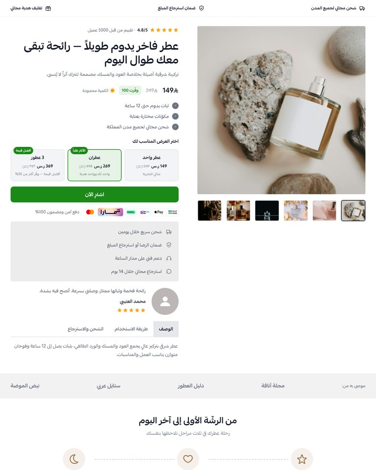
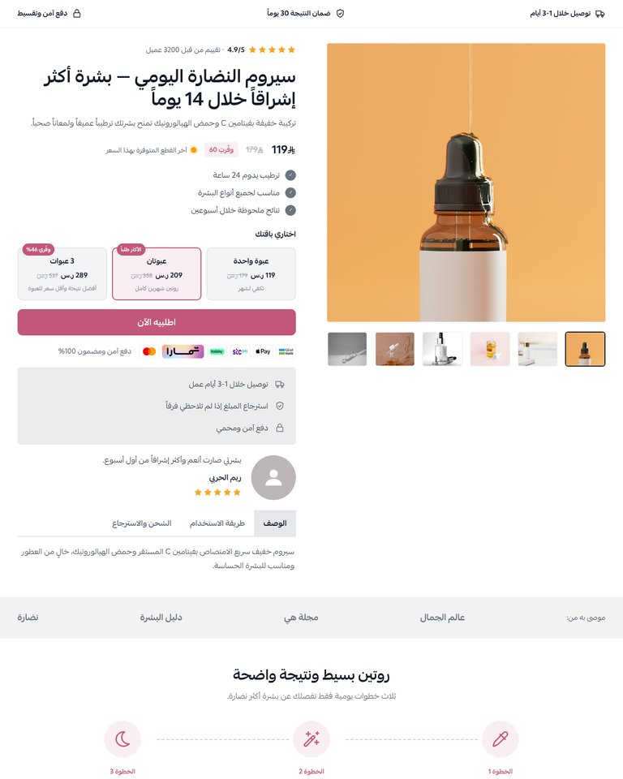
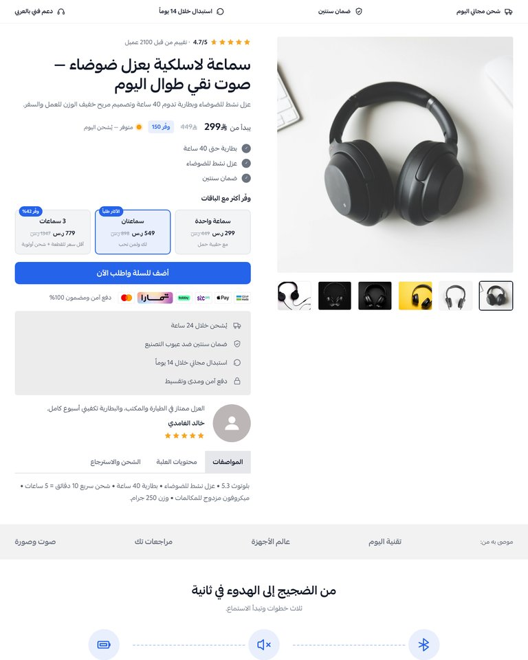
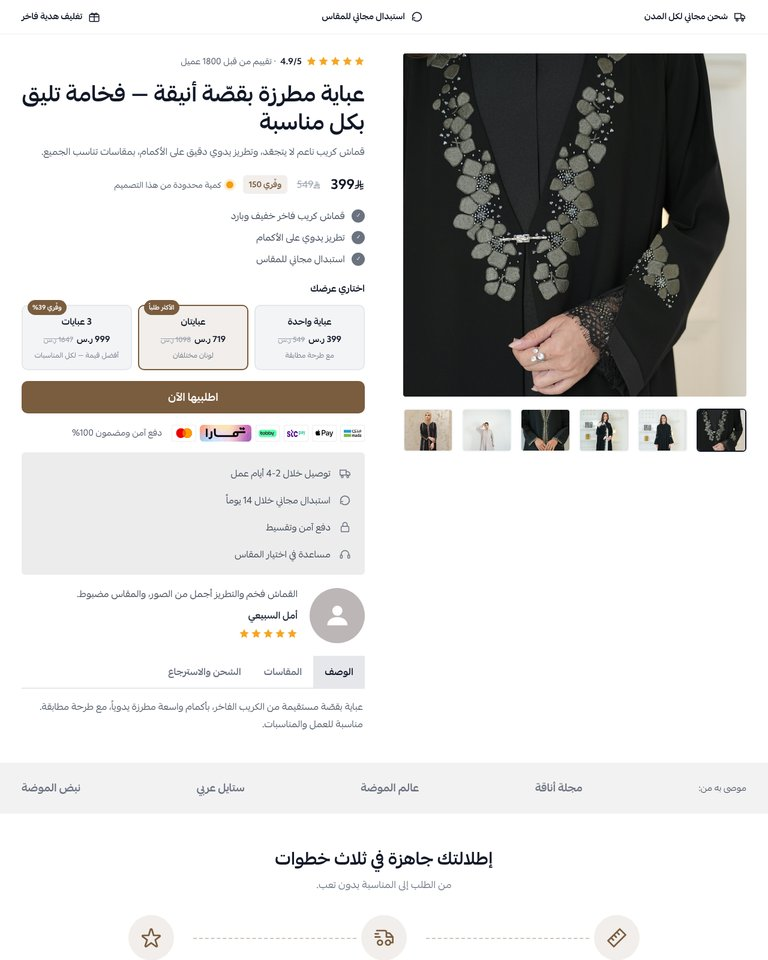
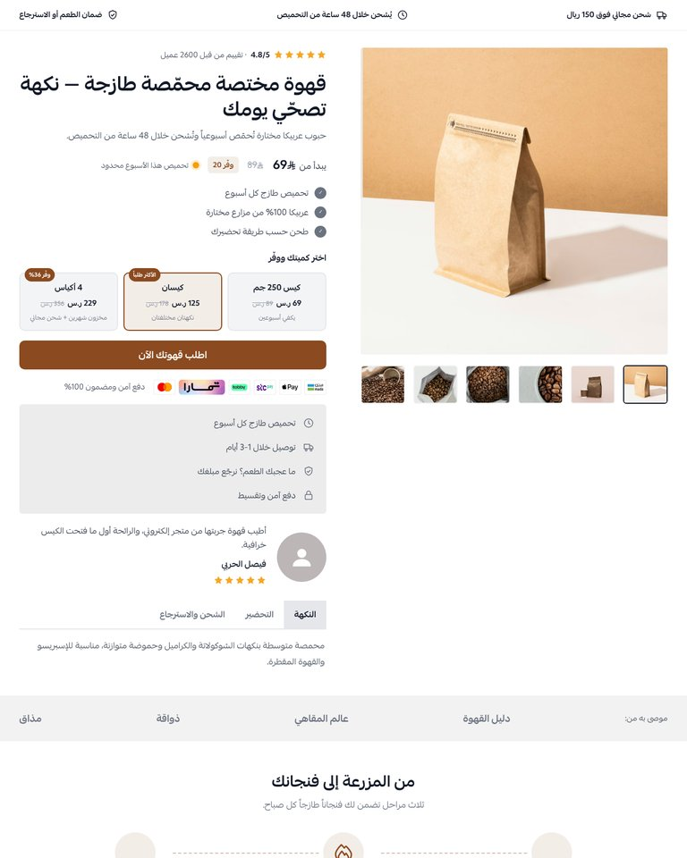
البدء
- بعد تثبيت المجموعة على متجرك، افتح تخصيص الثيم من لوحة تحكم متجرك.
- أضف العنصر الذي تريده إلى الصفحة من قائمة العناصر، ثم اضغط عليه لتعديل نصوصه وصوره وألوانه.
- يمكنك إضافة أكثر من عنصر وترتيبها كما تريد، وإخفاء أي جزء داخل العنصر من إعداداته.
- لصفحة هبوط كاملة: من قنوات البيع ← صفحات الهبوط اختر أحد القوالب الخمسة، ثم عدّل الصور والنصوص واربط القسم الرئيسي بمنتجك.
- اكتب النصوص بالعربي والإنجليزي من نفس الحقل (زر AR / EN)، ويتغير اتجاه العناصر تلقائياً حسب لغة المتجر.
- أزرار الشراء في العناصر الأخرى تنقل العميل إلى عنصر «المنتج الرئيسي» إذا كان في نفس الصفحة، أو تفتح رابطاً تحدده.
مقاسات الصور المقترحة
- صور المنتج: مربعة 1000×1000.
- صور المزايا والفوائد: 1200×900.
- صور العملاء: مربعة 600×600.
- غلاف الفيديو: طولي 720×1280.
- خلفية الدعوة الأخيرة: 1920×800.
1المنتج الرئيسي
قسم شراء كامل لمنتج واحد: صور المنتج، التقييم، السعر والخصم، عروض الكمية، زر الشراء، شعارات الدفع، بطاقة الثقة، رأي عميل، وتبويبات للوصف والاستخدام والشحن.
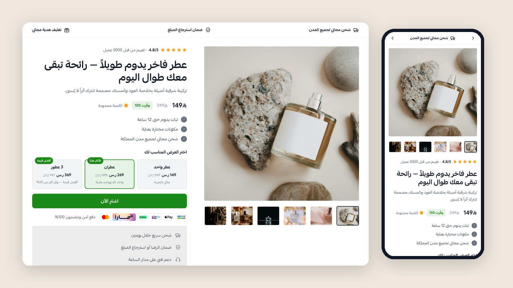
أهم الإعدادات
- اختر منتجاً من متجرك في حقل «المنتج المرتبط بالصفحة» ليظهر سعره وصوره وخياراته الحقيقية ويُضاف للسلة مباشرة.
- مصدر العروض: تلقائي (يعرض عروض تطبيق «عروض المنتجات والباقات» إن كان مثبتاً، وإلا عروض الكمية التي تكتبها)، أو عروض الكمية فقط، أو بدون عروض.
- بعد الضغط على الزر: إضافة للسلة ثم الانتقال للسلة، أو إضافة والبقاء في الصفحة، أو فتح رابط مخصص.
- يمكن إظهار زر الطلب السريع من سلة إذا كان مفعّلاً في متجرك.
- شريط المزايا العلوي، بطاقة الثقة، رأي العميل، التبويبات وشريط «موصى به من» كلها قابلة للإظهار والإخفاء.
2خطوات التحوّل
من 2 إلى 4 خطوات بأيقونات وأرقام توضّح رحلة العميل مع المنتج من المشكلة إلى النتيجة.
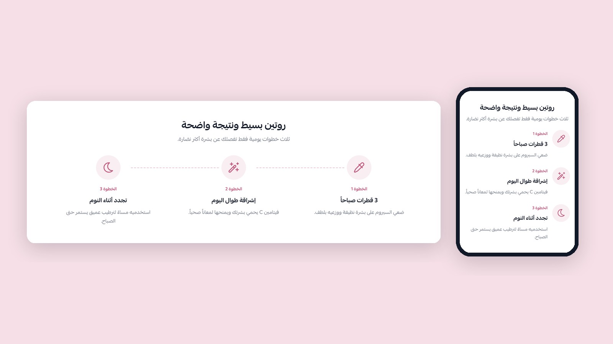
أهم الإعدادات
- لكل خطوة: أيقونة، عنوان، ووصف قصير.
- إظهار أو إخفاء رقم الخطوة والخط الواصل بين الخطوات.
- لون الأيقونات والأرقام قابل للتغيير.
3المزايا
صفوف صورة ونص متبادلة لشرح مزايا المنتج، مع صندوق «ماذا يوجد داخل العلبة» وزر شراء اختياري.
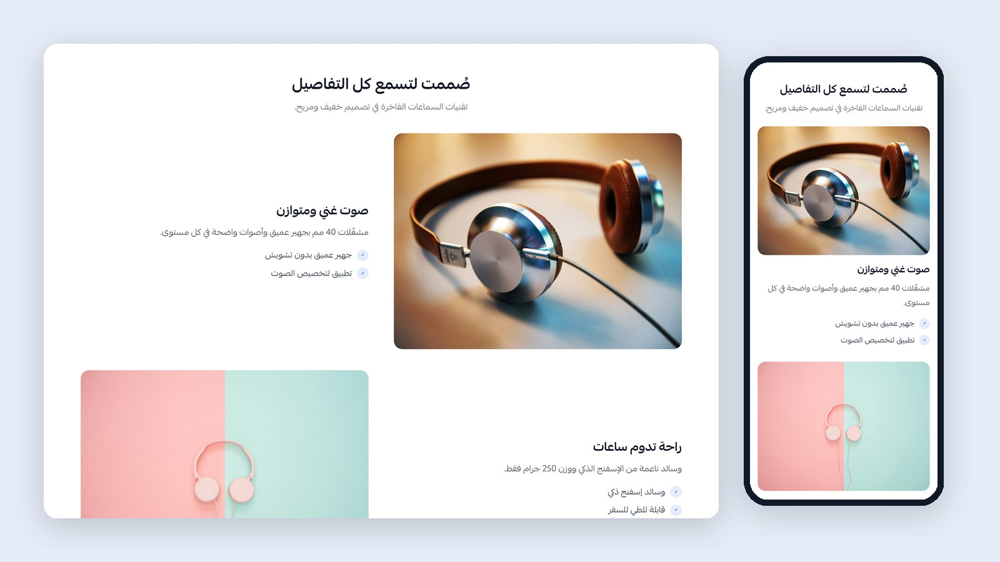
أهم الإعدادات
- لكل ميزة: صورة، عنوان، وصف، ونقاط (كل نقطة في سطر).
- اختر مكان صورة الصف الأول، والصفوف التالية تتبادل تلقائياً.
- صندوق المحتويات: عنوان، وصف، قائمة المحتويات وصورة.
4الفوائد
صفوف صورة ونص متبادلة تشرح الفوائد التي يلاحظها العميل في حياته اليومية.
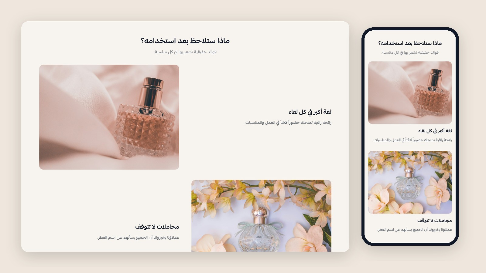
أهم الإعدادات
- لكل فائدة: صورة، عنوان، وصف ونقاط اختيارية.
- لون علامة ✓ ومكان الصورة الأولى قابلان للتغيير.
6مميزات المتجر
بطاقات توضّح مميزات متجرك مثل الشحن السريع والدفع الآمن والدعم والاسترجاع.
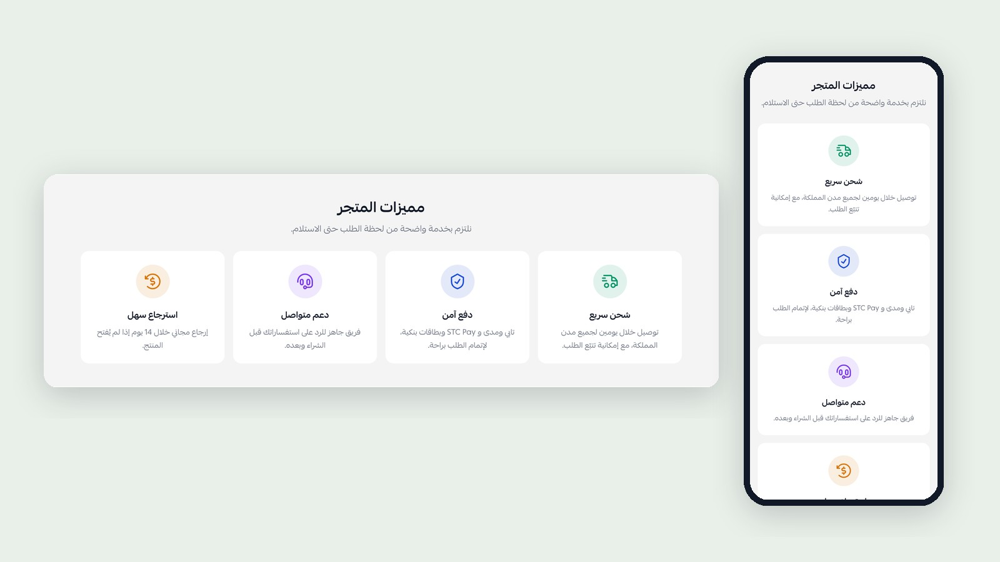
أهم الإعدادات
- لكل ميزة: أيقونة أو صورة، لون الأيقونة، عنوان ووصف.
- حتى 4 مميزات.
7المقارنة
جدول يقارن منتجك ببديلين (متوفر / جزئياً / غير متوفر) مع صورة جانبية، ليزيل تردد العميل.
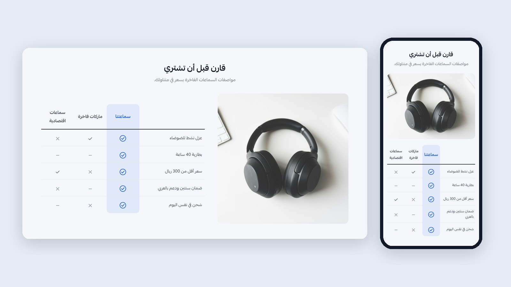
أهم الإعدادات
- اسم منتجك أو شعاره، واسما البديلين.
- لكل صف: الميزة وحالتها لكل عمود.
- لون عمود منتجك، وإظهار الصورة أو إخفاؤها.
8الأسئلة الشائعة
عنوان ومقدمة بجانب قائمة أسئلة تُفتح وتُغلق، مع زر شراء اختياري.
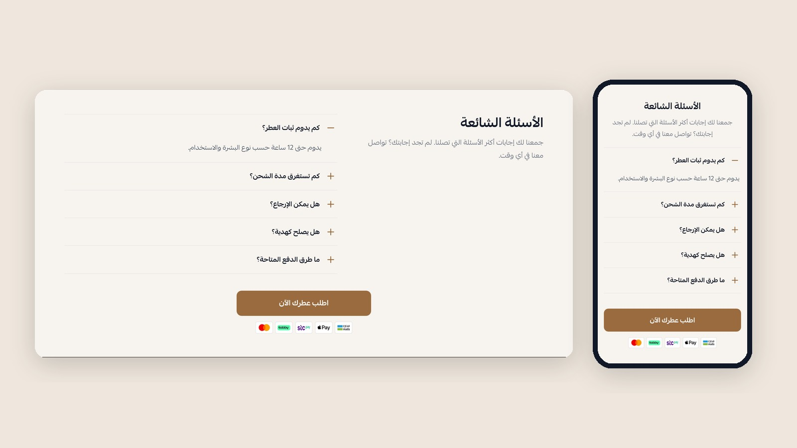
أهم الإعدادات
- طريقة العرض: جانبية أو تحت بعض.
- فتح أول سؤال تلقائياً.
- لكل سؤال: السؤال والإجابة بالعربي والإنجليزي.
9الدعوة الأخيرة
عنوان ختامي مع التقييم وزر الشراء وشعارات الدفع، مع صورة خلفية اختيارية.
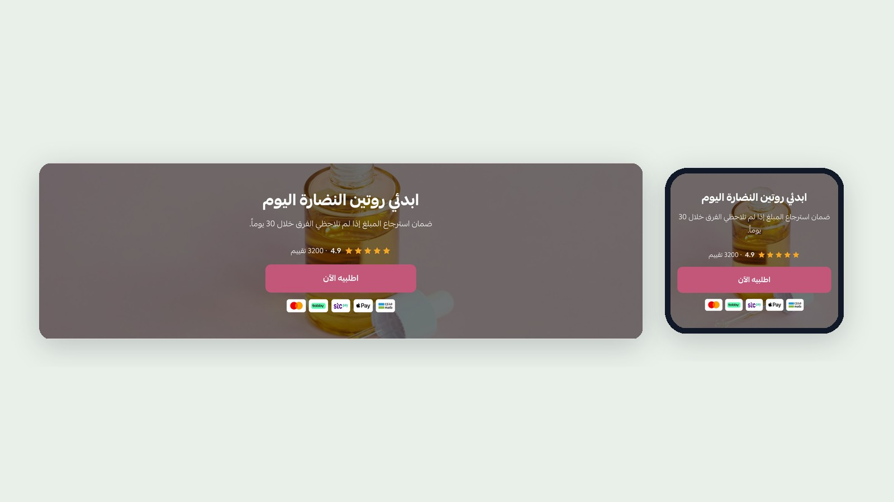
أهم الإعدادات
- صورة خلفية ودرجة تعتيمها، أو لون خلفية فقط.
- نص الزر ولونه، وماذا يحدث عند الضغط عليه.
الدعم الفني
تواصل معنا لأي استفسار قبل الشراء أو بعده: